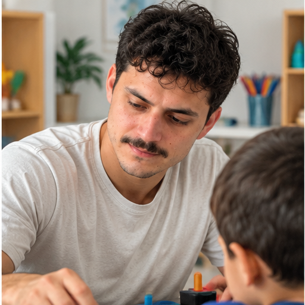
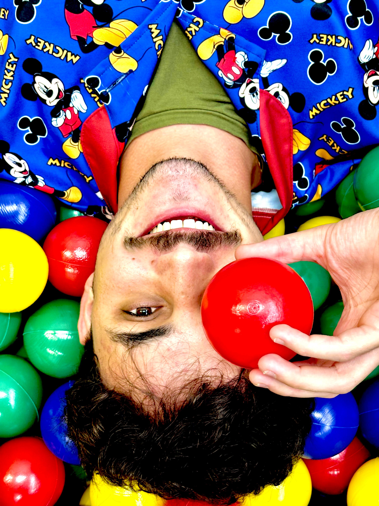
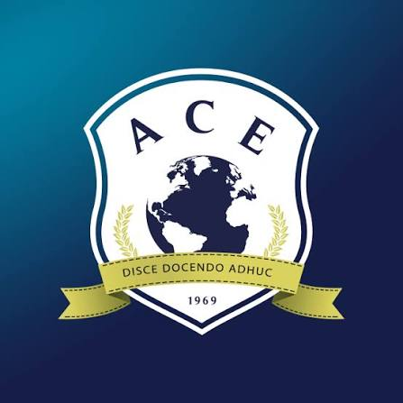
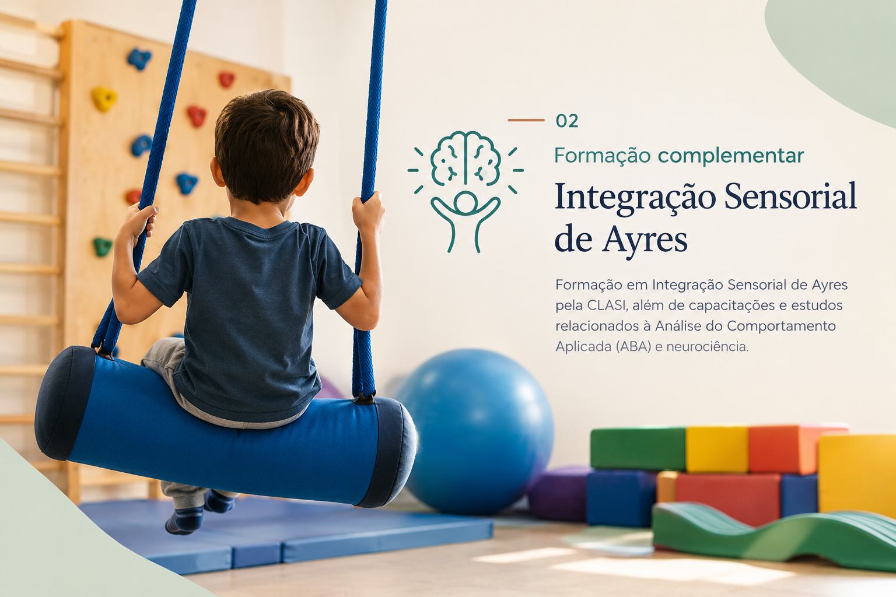
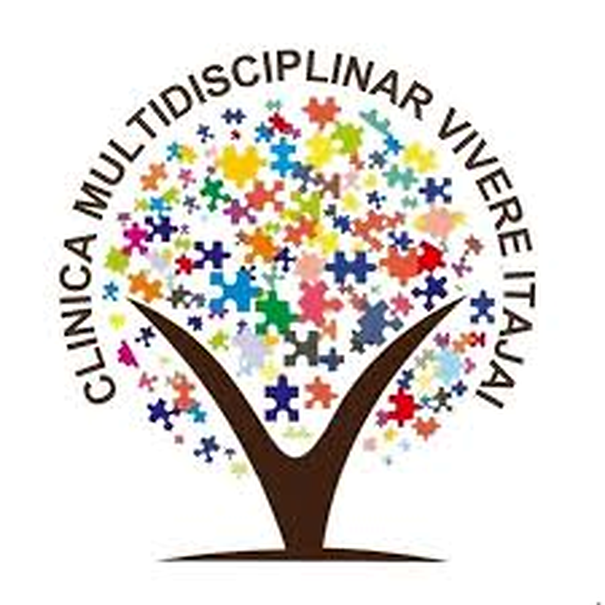

Desenvolvimento, autonomia e participação na infância e adolescência.
Agendar atendimentoCREFITO-10 nº 26.406-TO
Forma de trabalhar
Uma prática construída para cada criança.
Não existe um único método para todas as crianças. A intervenção é pensada a partir da avaliação, do raciocínio clínico e das necessidades individuais.
Avaliação
Compreender habilidades, necessidades e dificuldades.
Raciocínio clínico
Definir estratégias de acordo com cada caso.
Resposta individual
Adaptar o acompanhamento conforme a evolução.

Sobre o profissional
Um olhar individual para cada criança.
Otávio Miranda de Lima é Terapeuta Ocupacional, com atuação principalmente voltada para crianças e adolescentes.
Seu trabalho considera o desenvolvimento, o brincar, a rotina, a autonomia, a participação e as atividades que fazem parte do cotidiano de cada criança.
O atendimento é construído de maneira individualizada, considerando a avaliação, o perfil ocupacional, os objetivos terapêuticos e a resposta da criança ao longo do processo.
Áreas de atuação
Terapia ocupacional além do diagnóstico.
O atendimento considera as necessidades e características de cada criança, buscando desenvolver habilidades que tenham significado para sua vida cotidiana.
Desenvolvimento
Desenvolvimento de habilidades motoras, cognitivas, sensoriais e funcionais importantes para as atividades do cotidiano.
Autonomia
Trabalho voltado para atividades de vida diária, como vestir-se, higiene, alimentação e organização.
Participação
Desenvolvimento de habilidades que favoreçam a participação da criança em sua rotina, nas atividades significativas e nos diferentes contextos de sua vida.
Processamento sensorial
Estratégias individualizadas relacionadas ao processamento sensorial, organização corporal e respostas adaptativas.

O brincar como recurso terapêutico
Brincar também é uma forma de desenvolver.
O brincar pode ser utilizado como recurso terapêutico para trabalhar habilidades importantes de maneira significativa e adequada à realidade da criança.
As atividades podem envolver coordenação motora, planejamento motor, atenção, organização, resolução de problemas e participação.
A escolha das atividades acontece de acordo com a avaliação, os objetivos terapêuticos e a resposta individual de cada criança.
Como funciona
Um processo construído de forma individualizada.
Conhecer
Primeiro, é importante compreender a criança, sua rotina, sua história e as expectativas da família.
Avaliar
São observadas habilidades, dificuldades, atividades do cotidiano e aspectos relacionados ao desempenho ocupacional.
Planejar
A partir da avaliação, são definidos objetivos terapêuticos e estratégias adequadas às necessidades da criança.
Acompanhar
O processo é acompanhado continuamente, permitindo ajustes de acordo com a evolução e a resposta da criança.
Formação acadêmica e trajetória
Uma formação construída para a prática clínica.
Formação em Terapia Ocupacional, capacitações complementares e experiência clínica principalmente com crianças e adolescentes.

28 de abril de 2025
Graduação em Terapia Ocupacional
Faculdade Guilherme Guimbala — Joinville/SC.
Formação em Terapia Ocupacional com direcionamento posterior para desenvolvimento infantil, desempenho ocupacional, processamento sensorial e participação.

Formação complementar
Integração Sensorial de Ayres
Formação em Integração Sensorial de Ayres pela CLASI, além de capacitações e estudos relacionados à Análise do Comportamento Aplicada (ABA) e neurociência.
Esses conhecimentos são integrados ao raciocínio clínico de acordo com as necessidades apresentadas por cada criança.

Experiência clínica
Atuação profissional
Experiência na Clínica NorteAR, posteriormente na Clínica Denver e, atualmente, na Clínica Vivere, em Itajaí/SC.
Sua experiência clínica está direcionada principalmente ao desenvolvimento infantil, desempenho ocupacional, processamento sensorial, autonomia e participação.
O espaço onde acontece o atendimento
Clínica Vivere
É na Clínica Vivere, em Itajaí/SC, que Otávio realiza seus atendimentos em Terapia Ocupacional com crianças e adolescentes.
O ambiente clínico proporciona um espaço adequado para atividades terapêuticas, experiências lúdicas e desenvolvimento de habilidades relacionadas ao cotidiano.
R. Lages — Fazenda
Itajaí — SC
CEP 88301-475
(47) 99637-9016
Vamos conversar?
Um primeiro contato pode ser o começo de uma nova etapa.
Entre em contato para saber mais sobre o atendimento em Terapia Ocupacional e tirar suas dúvidas.
Falar pelo WhatsApp